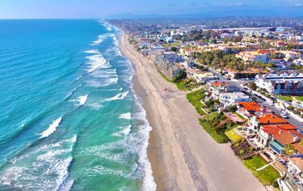
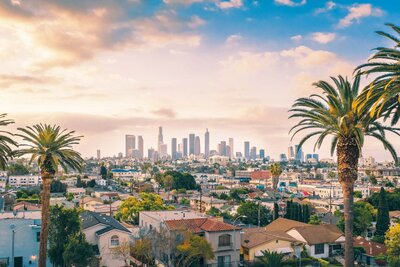
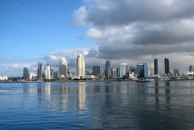

Carlsbad, CA
Carlsbad is a coastal city in the North County region of San Diego County, California, United States. The city is 87 miles (140 km) south of downtown Los Angeles and 35 miles (56 km) north of downtown San Diego. As of the 2020 census, the population of the city was 114,746. Carlsbad is a popular tourist destination and home to many businesses in the golf industry.

Los Angeles, CA
Los Angeles, often referred to by its initials L.A., is the largest city in the state of California and the second most populous city in the United States after New York City, as well as one of the world's most populous megacities. Los Angeles is the commercial, financial, and cultural center of Southern California. With a population of roughly 3.9 million as of 2020, Los Angeles is known for its Mediterranean climate, ethnic and cultural diversity, Hollywood film industry, and sprawling metropolitan area. The city of Los Angeles lies in a basin in Southern California adjacent to the Pacific Ocean extending through the Santa Monica Mountains and into the San Fernando Valley. It covers about 469 square miles (1,210 km2), and is the seat of Los Angeles County, which is the most populous county in the United States with an estimated 9.86 million as of 2022.

San Diego
San Diego is a city on the Pacific Ocean coast of Southern California located immediately adjacent to the Mexico–United States border. With a 2020 population of 1,386,932, it is the eighth most populous city in the United States and the seat of San Diego County, the fifth most populous county in the United States, with 3,338,330 estimated residents as of 2019. The city is known for its mild year-round climate, natural deep-water harbor, extensive beaches and parks, long association with the United States Navy, and recent emergence as a healthcare and biotechnology development center. San Diego is the second largest city in the state of California, after Los Angeles.
